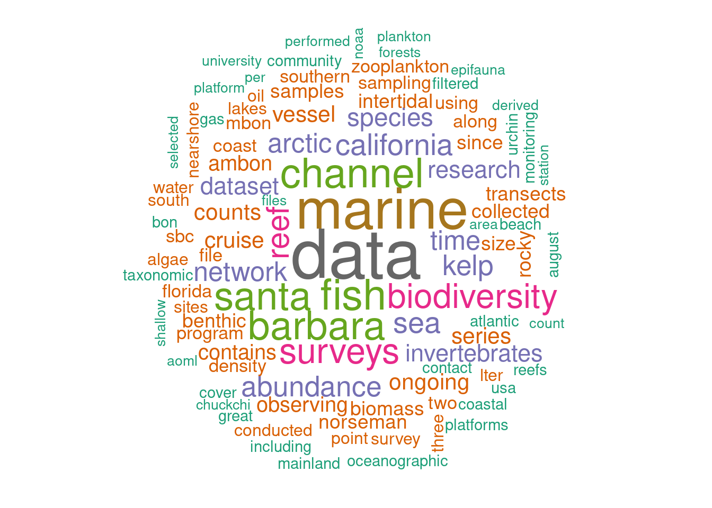

setup
if (!requireNamespace("librarian", quietly = TRUE)) {
# If not installed, install the package
install.packages("librarian")
}
librarian::shelf(
dplyr,
ggplot2,
here,
networkD3,
skimr,
tm,
wordcloud
)── Data Summary ────────────────────────
Values
Name data
Number of rows 47
Number of columns 36
_______________________
Column type frequency:
character 35
logical 1
________________________
Group variables None
── Variable type: character ────────────────────────────────────────────────────
skim_variable
1 Timestamp
2 Dataset.title
3 Dataset.summary
4 Is.there.a.DOI.or.existing.citation.for.the.dataset.
5 Who.is.the.data.management.POC.for.the.dataset.
6 Data.management.POC.email.
7 Who.is.the.technical.POC.for.the.dataset.
8 Technical.POC.email.
9 mbon.project
10 RA
11 Are.there.any.deadlines.associated.with.this.dataset.
12 Are.the.data.accessible.via.the.web.
13 If.yes.to.above..please.include.appropriate.link.s..here.
14 erddap
15 If.yes.to.above..please.include.appropriate.ERDDAP.link.s..here.
16 Has.the.dataset.been.translated.into.DarwinCore.
17 Has.the.dataset.been.submitted.to.OBIS.
18 If.yes.to.above..please.include.appropriate.OBIS.link.s..here.
19 Has.the.dataset.been.archived.at.NCEI.
20 If.yes.to.above..please.include.appropriate.NCEI.link.s..here.
21 What.is.the.current.format.of.the.data.
22 What.is.the.current.format.of.the.metadata.
23 How.frequently.will.the.data.be.updated.
24 Are.there.any.relationships.this.dataset.has.with.other.observations.
25 Are.there.any.specific.visualizations.requested.for.the.dataset.
26 Is.the.dataset.affiliated.with.other.programs..For.example..BOEM.
27 Upload.the.dataset.
28 Are.there.scripts.or.code.used.to.process.the.data.
29 If.yes.to.above..and.they.are.publicly.available..please.include.appropriate…
30 If.yes.to.above..and.the.code.is.available..please.include.appropriate.link.…
31 Would.you.like.this.dataset.visualized.in.the.MBON.Data.Portal..https...mbon…
32 Email.Address
33 If.the.dataset.is.already.visualized.in.the.MBON.data.portal..please.include…
34 What.is.the.expected.timeline.for.this.dataset.
35 X.1
n_missing complete_rate min max empty n_unique whitespace
1 0 1 0 19 8 18 0
2 0 1 21 209 0 46 0
3 0 1 0 1778 9 39 0
4 0 1 0 590 9 30 0
5 0 1 0 97 9 14 0
6 0 1 0 52 9 14 0
7 0 1 0 93 9 16 0
8 0 1 0 52 9 16 0
9 0 1 0 30 9 10 0
10 0 1 0 14 10 9 0
11 1 0.979 0 216 29 10 0
12 0 1 0 3 8 4 0
13 0 1 0 211 10 38 0
14 0 1 0 3 26 4 0
15 2 0.957 0 74 36 5 0
16 0 1 0 3 28 4 0
17 0 1 0 32 1 6 0
18 2 0.957 0 132 27 18 0
19 0 1 0 7 9 4 0
20 1 0.979 0 137 40 6 0
21 0 1 0 164 8 10 0
22 0 1 0 79 9 10 0
23 0 1 0 38 19 8 0
24 0 1 0 438 31 15 0
25 0 1 0 194 31 15 0
26 0 1 0 130 13 23 0
27 0 1 0 66 42 6 0
28 0 1 0 3 31 3 0
29 1 0.979 0 143 37 10 0
30 0 1 0 91 41 6 0
31 0 1 0 30 31 4 0
32 0 1 0 34 37 9 0
33 2 0.957 0 111 41 5 0
34 0 1 0 304 39 9 0
35 0 1 0 117 46 2 0
── Variable type: logical ──────────────────────────────────────────────────────
skim_variable n_missing complete_rate mean count
1 X 47 0 NaN ": " combined_text <- paste(data$`Dataset.title`, data$`Dataset.summary`, collapse = " ")
corpus <- Corpus(VectorSource(combined_text))
# Clean the text data
toSpace <- content_transformer(function(x, pattern) gsub(pattern, " ", x))
corpus <- tm_map(corpus, toSpace, "/")
corpus <- tm_map(corpus, toSpace, "@")
corpus <- tm_map(corpus, toSpace, "\\|")
corpus <- tm_map(corpus, content_transformer(tolower))
corpus <- tm_map(corpus, removePunctuation)
corpus <- tm_map(corpus, removeNumbers)
corpus <- tm_map(corpus, removeWords, stopwords("english"))
corpus <- tm_map(corpus, stripWhitespace)
# Create a Term-Document Matrix
dtm <- TermDocumentMatrix(corpus)
matrix <- as.matrix(dtm)
word_freqs <- sort(rowSums(matrix), decreasing = TRUE)
df <- data.frame(word = names(word_freqs), freq = word_freqs)
# Generate the word cloud
wordcloud(words = df$word, freq = df$freq, min.freq = 1,
max.words = 100, random.order = FALSE,
colors = brewer.pal(8, "Dark2"))
# Merge values with same meaning or replace with more meaningul strings
data <- data %>%
mutate(
RA = ifelse(RA == "", "No RA", RA),
erddap = ifelse(tolower(erddap) == "yes", "in ERDDAP", erddap),
erddap = ifelse(tolower(erddap) %in% c("no", ""), "not in ERDDAP", erddap)
)
# Create links data frame for mbon.project -> RA and RA -> erddap
links_mbon_ra <- data.frame(
source = data$mbon.project,
target = data$RA,
value = 1 # You can adjust this value as needed
)
links_ra_erddap <- data.frame(
source = data$RA,
target = data$erddap,
value = 1 # You can adjust this value as needed
)
# Combine the links data frames
links <- rbind(links_mbon_ra, links_ra_erddap)
# Create nodes data frame
nodes <- data.frame(
name = c(as.character(links$source), as.character(links$target)) %>% unique()
)
# Reformat the links with IDs
links$IDsource <- match(links$source, nodes$name) - 1
links$IDtarget <- match(links$target, nodes$name) - 1
# Make the Network
p <- networkD3::sankeyNetwork(Links = links, Nodes = nodes,
Source = "IDsource", Target = "IDtarget",
Value = "value", NodeID = "name",
sinksRight = FALSE)
p